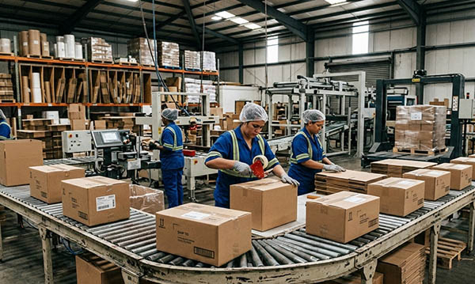

The packaging industry is one of the most dynamic and innovation-driven sectors in modern manufacturing. In Germany, as well as in France, Italy, Switzerland, the United Kingdom, Norway, Austria, Poland, and the Benelux countries (Belgium, Netherlands, Luxembourg), packaging plays a decisive role in protecting products, extending shelf life, ensuring safe transport, and communicating brand identity.
From food packaging and pharmaceutical packaging to industrial packaging, electronics packaging, cosmetic packaging, and logistics solutions, the sector combines functionality, sustainability, and high-speed production. Packaging facilities operate under strict hygiene standards, quality controls, and environmental regulations. In such structured and fast-paced environments, industrial signage, machine labels, safety signs, warning decals, engraved labels, type plates, industrial plates, rating plates, cable markers, barcode labels, QR code labels, asset tags, warehouse signage, and CE marking plates are essential for safe and efficient operations.
At SignXpert, we provide durable and fully customizable signage and labeling solutions tailored to the packaging industry in Germany and across Europe. Our products are engineered for clarity, compliance, and long-term industrial performance.
The Packaging Industry: A Key Element of the Product Value Chain.
Packaging is far more than a protective outer layer. It is a critical part of the entire product life cycle, from manufacturing and storage to logistics, retail presentation, and consumer experience. In Germany and across Europe, packaging manufacturers must meet strict EU safety and environmental regulations while maintaining high production speed and cost efficiency.
Germany is one of Europe’s strongest packaging markets, supported by advanced machinery and automation. France and Italy are leaders in food and luxury packaging design, Switzerland focuses on precision pharmaceutical packaging, the United Kingdom drives innovation in sustainable packaging solutions, Norway emphasizes environmentally responsible materials, Austria maintains strong industrial packaging production, Poland continues expanding high-volume manufacturing capabilities, and the Benelux region serves as a central logistics and distribution hub.
Across all these markets, structured production environments rely on clear machine labeling, engraved type plates, industrial rating plates, control panel labels, safety decals, and warehouse marking systems. Professional industrial signage ensures operational transparency, regulatory compliance, and efficient audits throughout the production chain.
SignXpert supports packaging companies primarily in Germany while delivering quickly and reliably to France, Italy, Switzerland, the UK, Norway, Austria, Poland, and the Benelux countries.
Sustainability and Smart Packaging Innovation.
Sustainability is one of the strongest drivers in the European packaging industry. Companies are increasingly investing in recyclable materials, biodegradable solutions, and lightweight packaging designs that reduce carbon emissions and material waste. Germany and neighboring countries are implementing strict environmental targets that influence packaging production standards.
At the same time, innovation continues to reshape the sector. Smart packaging with QR code labels, barcode labels, and digital tracking systems enhances product traceability and consumer communication. Advanced packaging machinery requires precise control panel labeling, durable machine decals, cable markers, and engraved identification plates to maintain operational reliability.
Industrial labeling systems play an important role in supporting sustainable production. Clear identification of materials, storage zones, recycling areas, and machine systems improves workflow organization and reduces unnecessary material handling errors. Durable industrial plates and safety signage ensure long-term clarity, minimizing replacement needs and contributing to resource efficiency.
SignXpert manufactures high-quality engraved labels, industrial plates, machine labels, safety signs, and CE marking plates that support modern and environmentally responsible packaging production facilities.
Efficient Production and Logistics Through Professional Labeling.
Packaging facilities operate at high speed, often running continuously to meet demand across Germany and European export markets. Efficient production depends on clearly defined workflows, structured material handling, and precise machine identification.
Machine labels, industrial type plates, rating plates, warning decals, cable identification markers, warehouse signage, floor marking decals, barcode labels, and asset tags ensure that equipment, materials, and logistics zones are clearly identifiable. When packaging machines, conveyors, palletizers, and robotic systems are properly labeled, maintenance becomes faster and downtime is minimized.
Clear safety signage marks hazard zones, moving parts, and restricted areas, protecting personnel and ensuring compliance with European workplace safety regulations. In large-scale facilities in Germany, automated production lines in Italy and France, pharmaceutical packaging sites in Switzerland, logistics hubs in the Benelux region, and manufacturing plants in Poland and Austria, professional industrial signage is essential for maintaining order and productivity.
SignXpert provides durable labeling solutions that withstand vibration, temperature fluctuations, cleaning processes, mechanical stress, and exposure to industrial chemicals, ensuring long-lasting visibility in demanding packaging environments.
Why SignXpert is the Reliable Partner for Packaging Industry Signage in Germany and Europe.
SignXpert is a trusted supplier of industrial signage, engraved labels, machine labels, safety decals, cable markers, barcode labels, QR code plates, type plates, industrial plates, rating plates, warehouse signage, and CE marking plates specifically tailored to the packaging industry.
Our primary focus is Germany, while offering fast and dependable delivery across France, Italy, Switzerland, the United Kingdom, Norway, Austria, Poland, and the Benelux countries.
With our user-friendly online system, packaging manufacturers can easily customize industrial engraving plates, control panel labels, safety signs, material identification labels, and logistics marking systems according to exact production requirements. Fast turnaround times help prevent delays and maintain smooth manufacturing operations.
Our labeling solutions are designed for durability, regulatory compliance, and professional appearance in high-performance industrial environments. Competitive pricing, precision manufacturing, and flexible customization make SignXpert the ideal partner for packaging companies seeking reliable and long-lasting industrial labeling systems.
By choosing SignXpert, packaging manufacturers in Germany and across Europe gain access to secure, high-quality signage and labeling solutions that enhance safety, improve traceability, support sustainability goals, and ensure efficient production throughout the entire packaging value chain.